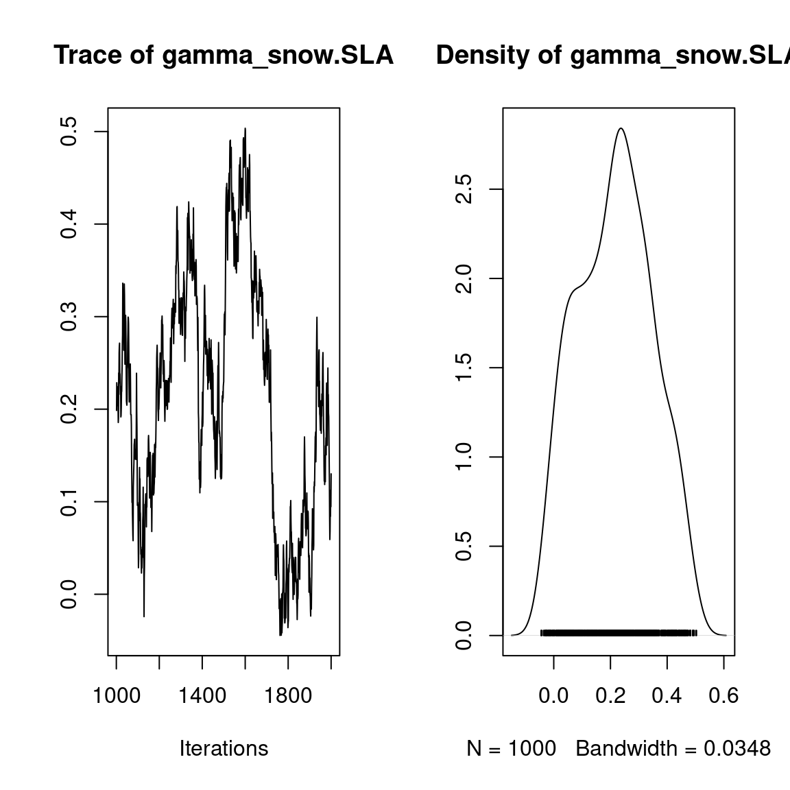
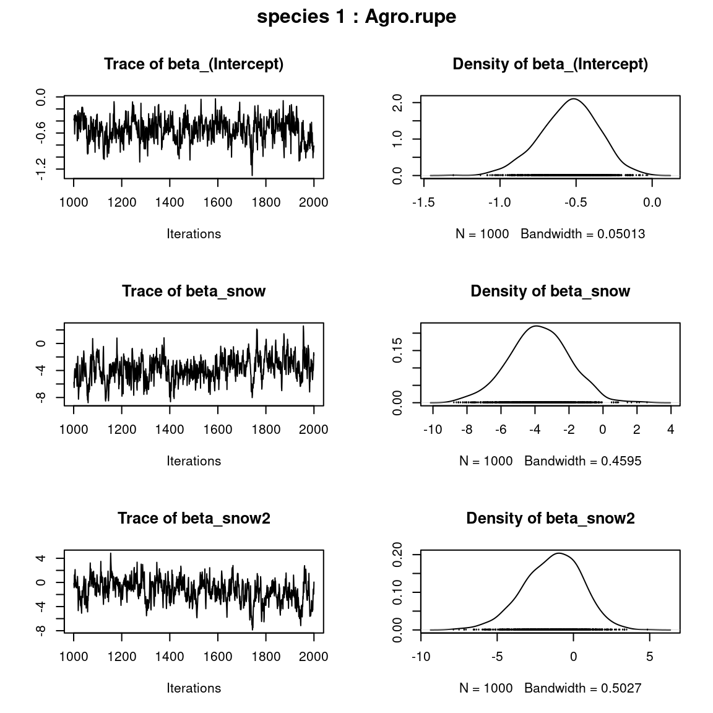
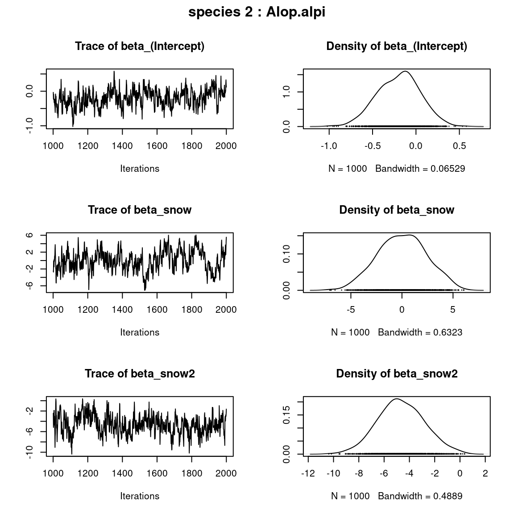
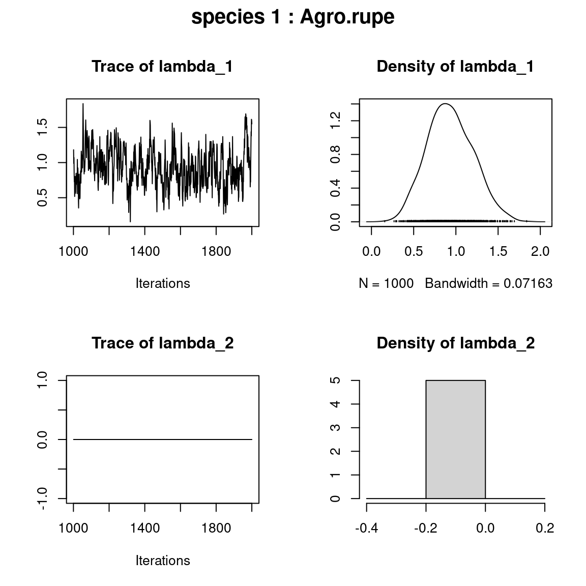
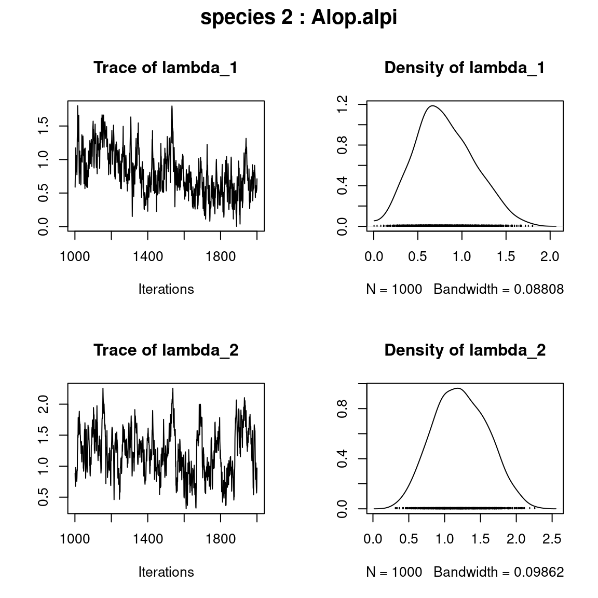
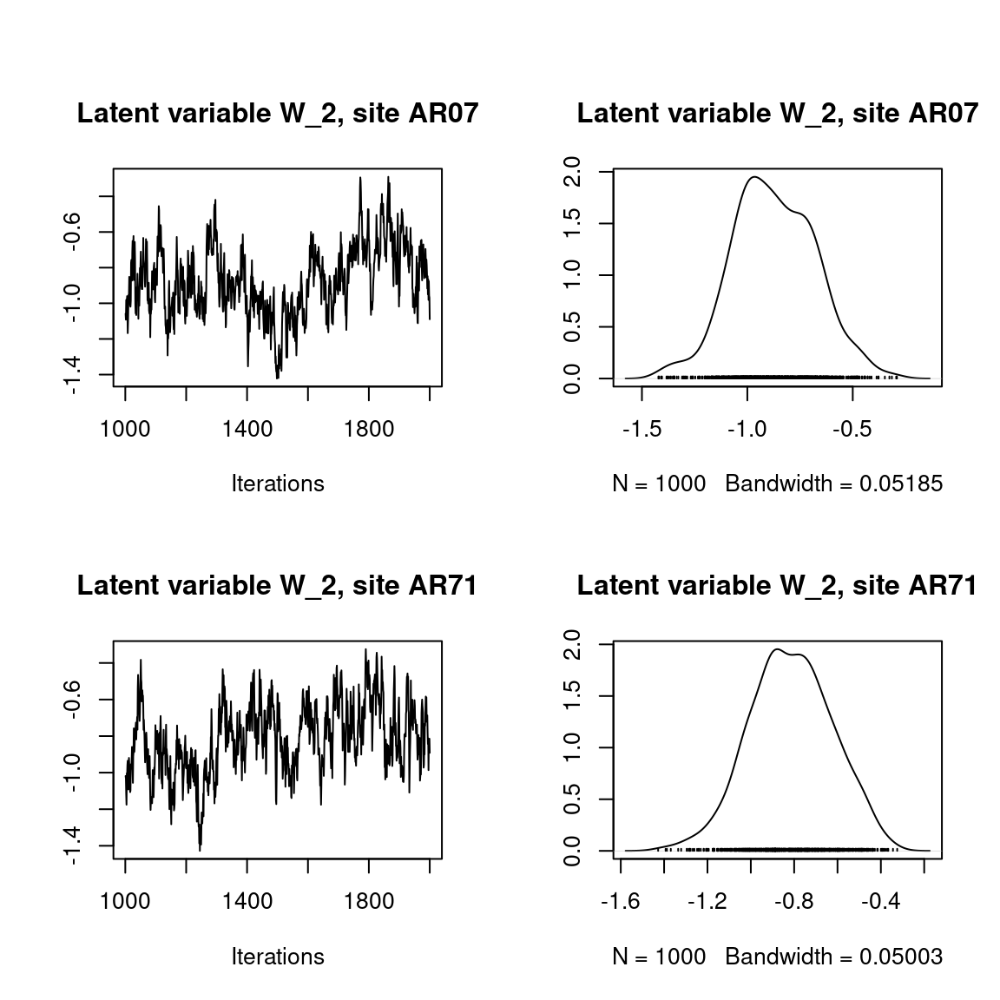
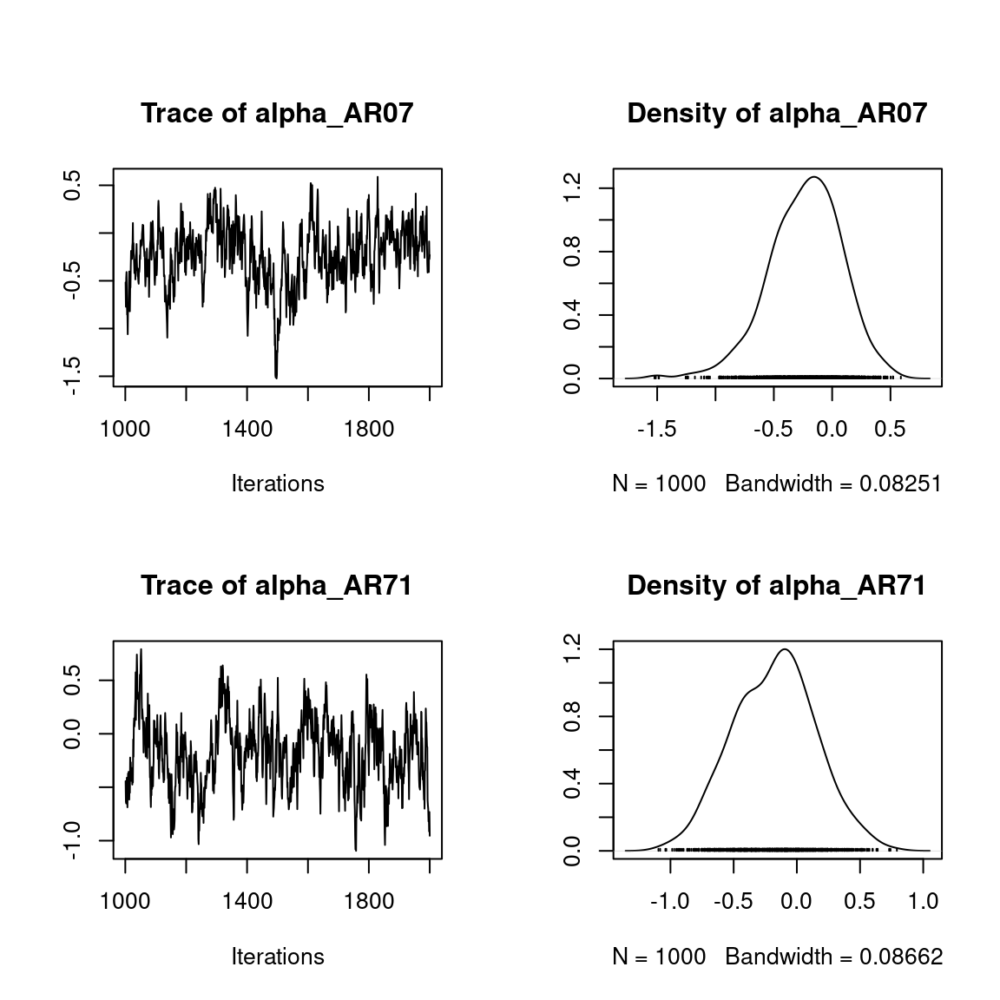
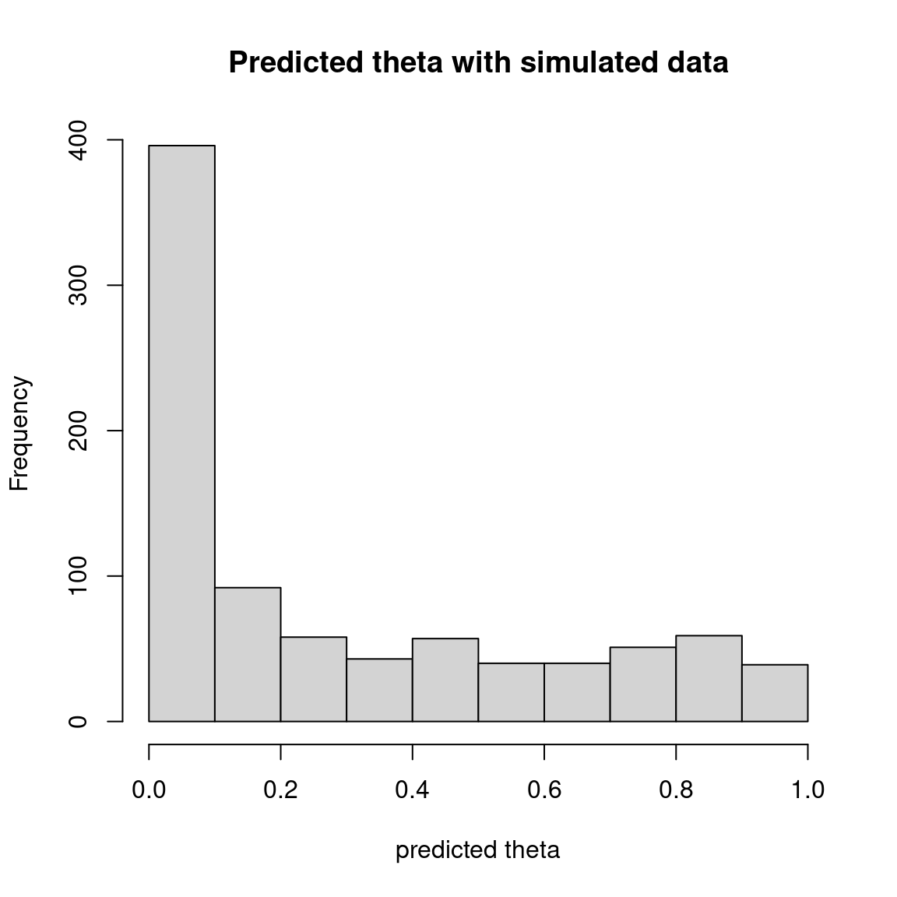

Bernoulli probit regression with missing data and species traits
Source:vignettes/jSDM_binomial_probit_long_format.Rmd
jSDM_binomial_probit_long_format.Rmd1 Model definition
Referring to the models used in the articles Warton et al. (2015) and Albert & Siddhartha (1993), we define the following model :
\[ \mathrm{probit}(\theta_{n}) =\alpha_i + D_n.\gamma + X_n.\beta_j + W_i.\lambda_j,\] such as \(species_n=j\) and \(site_n=i\).
Link function probit: \(\mathrm{probit}: q \rightarrow \Phi^{-1}(q)\) where \(\Phi\) correspond to the distribution function of the reduced centered normal distribution.
Response variable: \(Y=(y_{n})^{n=1,\ldots,nobs}\) such as \(species_n=j\) and \(site_n=i\) with:
\[y_{n}=\begin{cases} 0 & \text{ if species $j$ is absent on the site $i$} \\ 1 & \text{ if species $j$ is present on the site $i$}. \end{cases}\]
- Latent variable \(z_{n} = \alpha_i + D_n.\gamma + X_n.\beta_j + W_i.\lambda_j + \epsilon_{n}\), with \(\forall (n) \ \epsilon_{n} \sim \mathcal{N}(0,1)\) and such that:
\[y_{n}=\begin{cases} 1 & \text{if} \ z_{n} > 0 \\ 0 & \text{otherwise.} \end{cases}\]
It can be easily shown that: \(y_{n} \sim \mathcal{B}ernoulli(\theta_{n})\).
Latent variables: \(W_i=(W_i^1,\ldots,W_i^q)\) where \(q\) is the number of latent variables considered, which has to be fixed by the user (by default \(q=2\)). We assume that \(W_i \sim \mathcal{N}(0,I_q)\) and we define the associated coefficients: \(\lambda_j=(\lambda_j^1,\ldots, \lambda_j^q)'\). We use a prior distribution \(\mathcal{N}(0,10)\) for each lambda not concerned by constraints to \(0\) on upper diagonal and to strictly positive values on diagonal.
Explanatory variables: bioclimatic data about each site. \(X=(X_i)_{i=1,\ldots,n}\) with \(X_i=(1,x_i^1,\ldots,x_i^p)\in \mathbb{R}^{(p+1)}\) where \(p\) is the number of bioclimatic variables considered. The corresponding fixed species intercept (\(\beta_j^0\)) and regression coefficients for each species \(j\) are noted : \(\beta_j=(\beta_j^0,\beta_j^1,\ldots,\beta_j^p)'\).
\(\gamma\) correspond to the regression coefficients of explanatory variables found in matrix \(D=(D_n)_{i=1,\ldots,nobs}\). We use a prior distribution \(\mathcal{N}(0,10)\) for all parameters \(\gamma\).
\(\alpha_i\) represents the random effect of site \(i\) such as \(\alpha_i \sim \mathcal{N}(0,V_{\alpha})\) and we assumed that \(V_{\alpha} \sim \mathcal {IG}(\text{shape}=0.5, \text{rate}=0.005)\) as prior distribution by default.
2 Dataset
2.1 Presence-absence of alpine plants
Figure 2.1: Alpine plants (Choler 2005).
We consider alpine plants in Aravo (Valloire), south east France (Choler 2005). The data are available from the R package ade4 (Dray & Dufour 2007). The original dataset includes abundance data for 82 species in 75 sites.
library(jSDM)
#> ##
#> ## jSDM R package
#> ## For joint species distribution models
#> ## https://ecology.ghislainv.fr/jSDM
#> ##
data(aravo)
aravo$spe[1:5, 1:5]
#> Agro.rupe Alop.alpi Anth.nipp Heli.sede Aven.vers
#> AR07 0 0 0 0 0
#> AR71 0 0 0 0 0
#> AR26 3 0 1 0 1
#> AR54 0 0 0 2 0
#> AR60 0 0 0 0 0
head(aravo$env)
#> Aspect Slope Form PhysD ZoogD Snow
#> AR07 7 2 1 50 no 140
#> AR71 1 35 3 40 no 140
#> AR26 5 0 3 20 no 140
#> AR54 9 30 3 80 no 140
#> AR60 9 5 1 80 no 140
#> AR70 1 30 3 40 no 140We transform abundance into presence-absence data and remove species with less than 5 presences. We also look at the number of observations per site.
# Transform abundance into presence-absence
pres_data <- aravo$spe
pres_data[pres_data > 0] <- 1
# Remove species with less than 5 presences
rare_sp <- which(apply(pres_data, 2, sum) < 5)
pres_data <- pres_data[, -rare_sp]
# Number of sites and species
nsite <- dim(pres_data)[1]
nsite
#> [1] 75
nsp <- dim(pres_data)[2]
nsp
#> [1] 65
# Number of observations per site
nobs_site <- apply(pres_data, 1, sum)
nobs_site
#> AR07 AR71 AR26 AR54 AR60 AR70 AR22 AR25 AR27 AR28 AR72 AR01 AR23 AR08 AR12 AR13
#> 12 12 25 16 11 18 28 15 22 24 12 20 21 27 24 22
#> AR61 AR49 AR50 AR52 AR29 AR30 AR51 AR05 AR53 AR06 AR16 AR56 AR75 AR69 AR15 AR63
#> 20 20 21 20 27 24 25 23 12 28 17 12 16 28 20 25
#> AR74 AR64 AR65 AR66 AR67 AR68 AR11 AR32 AR02 AR10 AR31 AR39 AR40 AR57 AR58 AR62
#> 9 7 6 10 11 14 20 25 20 15 14 16 18 13 15 17
#> AR24 AR37 AR38 AR03 AR14 AR19 AR20 AR36 AR42 AR44 AR34 AR35 AR46 AR47 AR48 AR41
#> 5 7 11 12 13 6 14 9 12 10 10 13 10 15 15 18
#> AR43 AR45 AR21 AR73 AR04 AR09 AR17 AR18 AR33 AR55 AR59
#> 13 11 23 20 25 14 17 17 11 20 17
# Number of observations per species
nobs_sp <- apply(pres_data, 2, sum)
nobs_sp
#> Agro.rupe Alop.alpi Anth.nipp Aven.vers Care.rosa Care.foet Care.parv Care.rupe
#> 29 37 17 15 28 20 12 5
#> Care.semp Fest.quad Fest.viol Kobr.myos Luzu.lute Poa.alpi Poa.supi Sesl.caer
#> 12 11 13 23 8 59 6 7
#> Alch.pent Alch.glau Alch.vulg Andr.brig Ante.carp Camp.sche Card.alpi Cera.stri
#> 26 14 5 17 17 36 16 29
#> Cera.cera Leuc.alpi Cirs.acau Drab.aizo Erig.unif Gent.camp Gent.acau Gent.vern
#> 12 30 5 13 22 14 8 28
#> Geum.mont Omal.supi Andr.vita Hier.pili Homo.alpi Leon.pyre Ligu.muto Lloy.sero
#> 45 37 16 11 6 39 20 5
#> Minu.sedo Minu.vern Plan.alpi Poly.vivi Pote.aure Pote.cran Puls.vern Ranu.kuep
#> 39 10 36 31 36 11 18 19
#> Sagi.glab Sali.herb Saxi.pani Sedu.alpe Semp.mont Sene.inca Sibb.proc Sile.acau
#> 24 24 9 19 21 10 45 8
#> Vero.alpi Vero.bell Myos.alpe Tara.alpi Oxyt.camp Oxyt.lapp Lotu.alpi Trif.alpi
#> 16 35 19 11 5 6 9 6
#> Trif.thal
#> 52.2 Environmental variables
The environmental variables are:
- Aspect: Relative south aspect (opposite of the sine of aspect with flat coded 0).
- Slope: Slope inclination (degrees).
- Form: Microtopographic landform index: 1 (convexity); 2 (convex slope); 3 (right slope); 4 (concave slope); 5 (concavity).
- Snow: Mean snowmelt date (Julian day) averaged over 1997-1999.
- PhysD: Physical disturbance, i.e., percentage of unvegetated soil due to physical processes.
- ZoogD: Zoogenic disturbance, i.e., quantity of unvegetated soil due to marmot activity: no; some; high.
As a first approach, we just select the “Snow” variable considering a quadratic orthogonal polynomial.
p <- poly(aravo$env$Snow, 2)
env_data <- data.frame(cbind(1, p))
names(env_data) <- c("int", "snow", "snow2")
head(env_data)
#> int snow snow2
#> 1 1 -0.1571577 0.1587642
#> 2 1 -0.1571577 0.1587642
#> 3 1 -0.1571577 0.1587642
#> 4 1 -0.1571577 0.1587642
#> 5 1 -0.1571577 0.1587642
#> 6 1 -0.1571577 0.1587642
# Number of environmental variables plus intercept
np <- ncol(env_data)2.3 Species traits
The species traits available for the alpine plants are:
- Height: Vegetative height (cm)
- Spread: Maximum lateral spread of clonal plants (cm)
- Angle: Leaf elevation angle estimated at the middle of the lamina
- Area: Area of a single leaf
- Thick: Maximum thickness of a leaf cross section (avoiding the midrib)
- SLA Specific leaf area
- Nmass: Mass-based leaf nitrogen content
- Seed: Seed mass
As a first approach, we just integer the interaction between the mean snowmelt date Snow and the specific leaf area SLA as an explanatory factor of the model.
head(aravo$traits)
#> Height Spread Angle Area Thick SLA N_mass Seed
#> Agro.rupe 6 10 80 60.0 0.12 8.1 218.70 0.08
#> Alop.alpi 5 20 20 190.9 0.20 15.1 203.85 0.21
#> Anth.nipp 15 5 50 280.0 0.08 18.0 219.60 0.54
#> Heli.sede 0 30 80 600.0 0.20 10.6 233.20 1.72
#> Aven.vers 12 30 60 420.0 0.14 12.5 156.25 1.17
#> Care.rosa 30 20 80 180.0 0.40 6.5 208.65 1.68
data <- data.frame(site=rep(rownames(pres_data), nsp),
species=rep(colnames(pres_data), each=nsite))
data$Y <- c(as.matrix(pres_data))
data$snow <- rep(env_data$snow,nsp)
data$snow2 <- rep(env_data$snow2,nsp)
data$snow.SLA <- scale(c(env_data$snow %*% t(aravo$traits$SLA[-rare_sp])))
head(data)
#> site species Y snow snow2 snow.SLA
#> 1 AR07 Agro.rupe 0 -0.1571577 0.1587642 -0.686078
#> 2 AR71 Agro.rupe 0 -0.1571577 0.1587642 -0.686078
#> 3 AR26 Agro.rupe 1 -0.1571577 0.1587642 -0.686078
#> 4 AR54 Agro.rupe 0 -0.1571577 0.1587642 -0.686078
#> 5 AR60 Agro.rupe 0 -0.1571577 0.1587642 -0.686078
#> 6 AR70 Agro.rupe 0 -0.1571577 0.1587642 -0.6860783 Parameter inference
We use the jSDM_binomial_probit_long_format() function to fit the JSDM (increase the number of iterations to achieve convergence).
mod <- jSDM_binomial_probit_long_format(
# Chains
burnin=1000, mcmc=1000, thin=1,
# Response variable
data=data,
# Explanatory variables
site_formula = ~ snow.SLA + (snow + snow2):species,
# Model specification
n_latent=2, site_effect="random",
# Starting values
alpha_start=0, gamma_start=0,
beta_start=0,
lambda_start=0, W_start=0,
V_alpha=1,
# Priors
shape_Valpha=0.1,
rate_Valpha=0.1,
mu_gamma=0, V_gamma=10,
mu_beta=0, V_beta=10,
mu_lambda=0, V_lambda=10,
# Various
seed=1234, verbose=1)
#>
#> Running the Gibbs sampler. It may be long, please keep cool :)
#>
#> **********:10.0%
#> **********:20.0%
#> **********:30.0%
#> **********:40.0%
#> **********:50.0%
#> **********:60.0%
#> **********:70.0%
#> **********:80.0%
#> **********:90.0%
#> **********:100.0%4 Analysis of the results
np <- nrow(mod$model_spec$beta_start)
nd <- length(mod$model_spec$gamma_start)
## gamma
plot(mod$mcmc.gamma)
## beta_j of the first two species
par(mfrow=c(np,2), oma=c(0,0,2,0))
for (j in 1:2) {
plot(mod$mcmc.sp[[j]][,1:np])
title(outer=TRUE, main=paste0( "species ", j ," : ",
unique(data$species)[j]), cex.main=1.5)
}
## lambda_j of the first two species
n_latent <- mod$model_spec$n_latent
par(mfrow=c(n_latent,2), oma=c(0,0,2,0))
for (j in 1:2) {
plot(mod$mcmc.sp[[j]][,(np+1):(np+n_latent)])
title(outer=TRUE, main=paste0( "species ", j ," : ",
unique(data$species)[j]), cex.main=1.5)
}
## Latent variables W_i for the first two sites
par(mfrow=c(2,2))
for (l in 1:n_latent) {
for (i in 1:2) {
coda::traceplot(mod$mcmc.latent[[paste0("lv_",l)]][,i],
main = paste0("Latent variable W_", l, ", site ", unique(data$site)[i]))
coda::densplot(mod$mcmc.latent[[paste0("lv_",l)]][,i],
main = paste0("Latent variable W_", l, ", site ", unique(data$site)[i]))
}
}
## alpha_i of the first two sites
plot(mod$mcmc.alpha[,1:2])
## V_alpha
plot(mod$mcmc.V_alpha)
## Deviance
plot(mod$mcmc.Deviance)
## probit_theta
par (mfrow=c(2,1))
hist(mod$probit_theta_latent,
main = "Predicted probit theta", xlab ="predicted probit theta")
hist(mod$theta_latent,
main = "Predicted theta", xlab ="predicted theta")
5 Matrice of correlations
After fitting the jSDM with latent variables, the full species residual correlation matrix \(R=(R_{ij})^{i=1,\ldots, nspecies}_{j=1,\ldots, nspecies}\) can be derived from the covariance in the latent variables such as : \[\Sigma_{ij} = \lambda_i^T .\lambda_j \], then we compute correlations from covariances : \[R_{i,j} = \frac{\Sigma_{ij}}{\sqrt{\Sigma _{ii}\Sigma _{jj}}}\].
We use the plot_residual_cor() function to compute and display the residual correlation matrix :
plot_residual_cor(mod, tl.srt = 10)
6 Predictions
We use the predict.jSDM() S3 method on the mod object of class jSDM to compute the mean (or expectation) of the posterior distributions obtained and get the expected values of model’s parameters.
# Sites and species concerned by predictions :
## 35 sites among the 75
nsite_pred <- 35
## 25 species among the 65
nsp_pred <- 25
sites <- sample(as.character(unique(data$site)), nsite_pred)
Id_sites <- rep(sites,nsp_pred)
species <- sample(as.character(unique(data$species)), nsp_pred)
Id_species <- rep(species,each=nsite_pred)
nobs <- length(Id_species)
# Simulate new observations of covariates on those sites
simdata <- data.frame(site=Id_sites, species=Id_species)
snow <- rnorm(nsite_pred)
p2 <- poly(snow, 2)
simdata$snow <- p2[,1]
simdata$snow2 <- p2[,2]
SLA_sp_pred <- aravo$traits[species,]$SLA
simdata$snow.SLA <- scale(c(p2[,1] %*% t(SLA_sp_pred)))
# Predictions
theta_pred <- predict(mod, newdata=simdata,
Id_species=Id_species, Id_sites=Id_sites, type="mean")
hist(theta_pred, main="Predicted theta with simulated data", xlab="predicted theta")